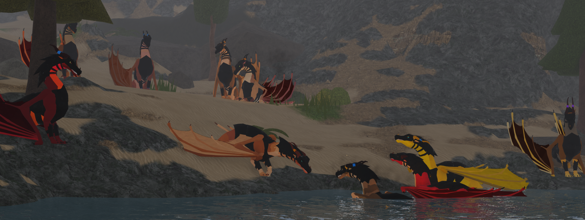
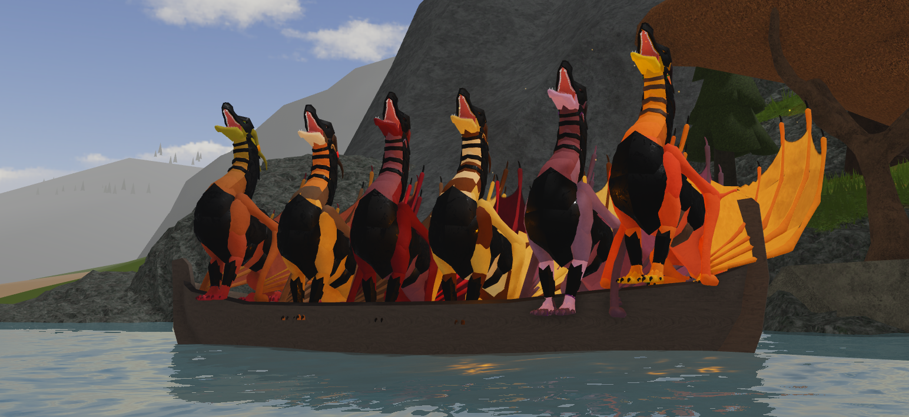
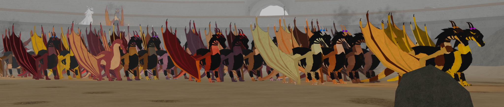
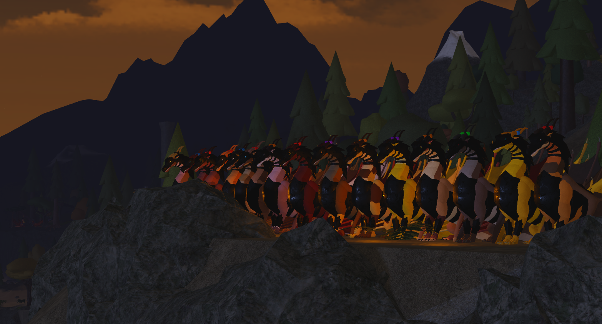
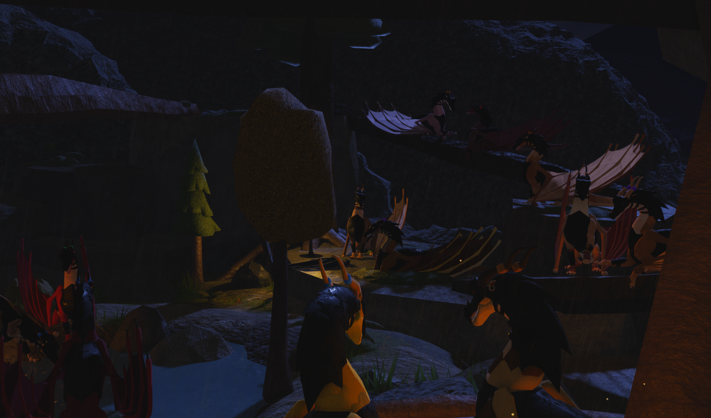
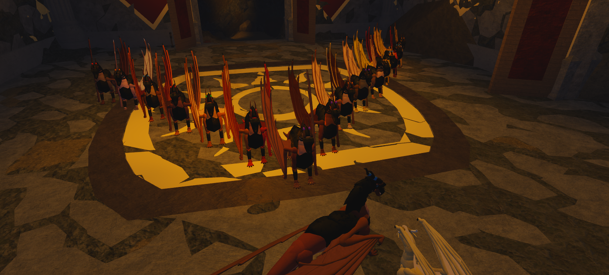

Welcome to...
The Raven Callbook!
Made by Sinopia for The Ring of Ravens

This site is currently an extremely early work in progress. If you'd like to use the routine instructor, you can check out the old version on Scratch! ^^

Changelog
8/30/2026
- Temporarily removed community and personal stats pages from navbar
- Added a link to the old routine instructor on the homepage
- Tidied up the left side of the homepage a bit
8/29/2026
- Made a trello to organize ideas, tasks, and resources for the website
- Updated the gallery theme for September (a few days early)
- Made details text easier to see in the gallery
- Added a footer
- Added an explanation below the gallery about how screenshots are chosen
- Revised system for organizing screenshots in the gallery
- Selected 9 fresh screenshots for the gallery
6/16/2026
- Cleaned up some code
6/11/2026
- Designed concept for guidebook page
- Started basic groundwork for guidebook page code
6/8/2026
- Created Homepage
- Created Monthly Gallery (Pride Month)
- Created Changelog
- Created New HTML Files For Blank Pages
6/7/2026
- Designed Website Layout
- Created Raven Pattern Backdrop
- Created Favicon
6/6/2026
- Integrated Visual Studio W/ GitHub Repository
- Created Repository
🍂 September 🏫
Facts of the month:
September marks the start of autumn in the Northern Hemisphere and is often considered harvest season.
The name comes from the Latin word "septem" meaning "seven" as it was originally the seventh month in the Roman calendar.

...

...

...

...

...

...

...

...

...